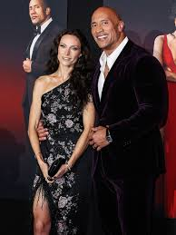
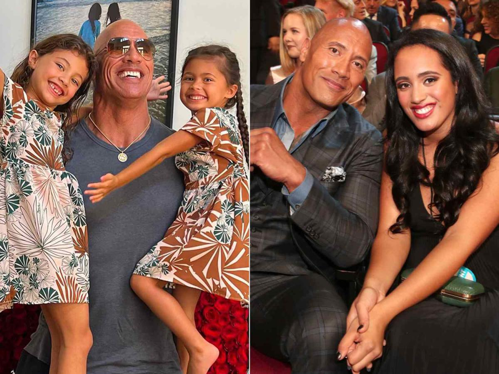
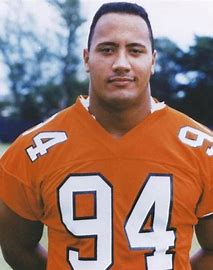
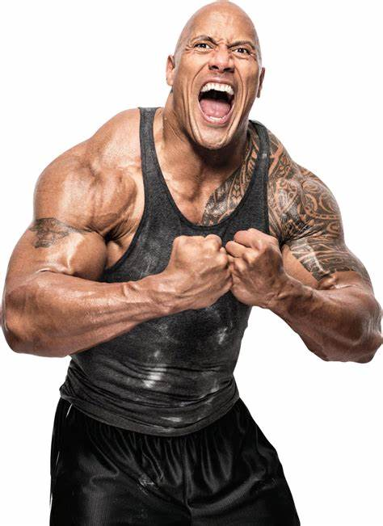
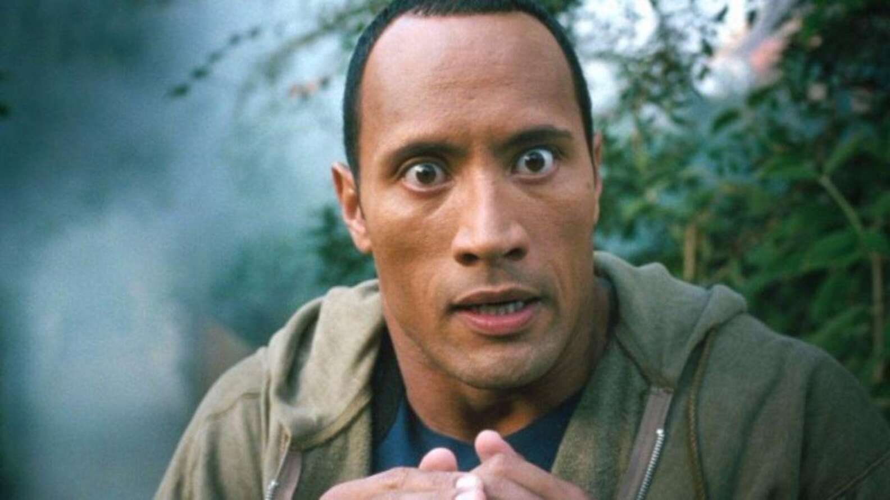

Dwayne Johnson
Dwayne Johnson, also known as The rock, was born in Hayward, California, on May 2, 1972.
He was raised as an only child but later found out that his father, Rocky Johnson, had 7 other kids
with 6 different women. Growing up, Dwayne would watch his dad wrestle all the time, And started
showing interest in the sport at age 11 inspired by Rocky johnson's success. 13 years later, when he
was 24 years old he fought his first wrestling match. It was a close game but he ended up winning in
the end. The rock is now happily married to Lauren Hashian and has 3 kids; Simone
Johnson(23y.o), Jasmine Johnson(9y.o), and Tiana Johnson(6y.o).


Early life
Dwayne Douglas Johnson was born on May 2 1972 to Ata Johnson, his mother, and former pro wrestler
Rocky Johnson, his father. Johnson was born in Hayward, California but lived in new zealand for a
very brief period of time, where he played rugby and attended Richmond Road Primary School, before
moving back to the US where he attended President William McKinley High School in Honolulu, then
Glencliff High School in Nashville, McGavock high school in Tennessee, and then graduated at Freedom
High School in Bethlehem Township, Pennsylvania.
Football Career
At freedom highschool Dwayne johnson was a bully. Having a father that was in the WWE, it was in johnsons
nature to fight. He was suspended often for fighting at school and arrested multiple time for fighting
outside of school. Because Dwayne was so big and muscular, Jody Cwik, The football coach at His school,
recrutited him to the school's team, where he played defensive tackle. After his high school years
Dwayne johnson continued to play football at the university of miami as a member the Miami hurricanes
1991 team and won that years championship. During his time at Miami, Johnson played in 39 games
and started 1 time. He recorded 4.25 sacks and 77 tackles. After graduating he was signed by
the Calgary Stampeders of the CFL.

Wrestling career
Dwayne johnson made his wrestling debut on march 10, 1996, at age 24. His ring name was Rocky Maivia,
honouring both his father and grandfather who were both wrestlers. He was first presented as heroic
and a good guy, but fans were not liking it so they started booing him. This lead to him transforming
into a more confident and cocky guy we know today: The Rock. From 1997-2000 The Rock was growing rapidly,
quickly becoming a fan favourite. This is the time period when he started developing catchphrases. His
most famous is "If you smell what the rock is cooking!" Which is one of the most recognizable in WWE
History. The rock's last time wrestling was in april of 2024, during wrestlemania 40.

Acting career
The rock had his first acting role in 2001 in The Mummy Returns as the scorpion king. People loved
him so much that he was the lead roll in The scorpion king, a spin-off of the mummy returns. He starred
in much more movies after that, including The rundown, walking tall, and gridiron gang.In 2004
he took a break from wrestling to start acting full time. Some of his later films include GI Joe: retaliation,
Pain & Gain, and Four of the Fast and Furious movies.
One of the more recent movies Dwayne Johnson has done is Red One.
He was paid $50M for it, making it the most he has been given for a single movie.

